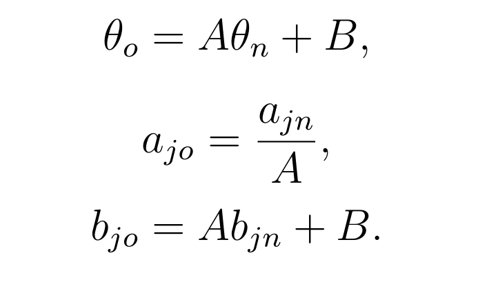
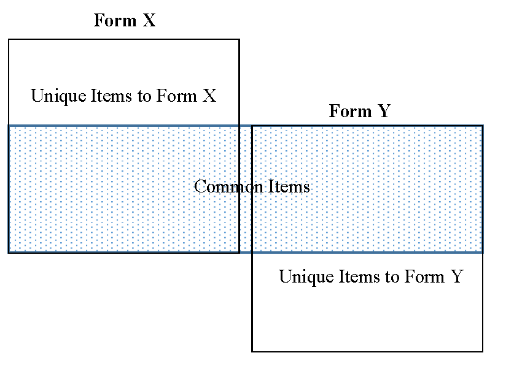
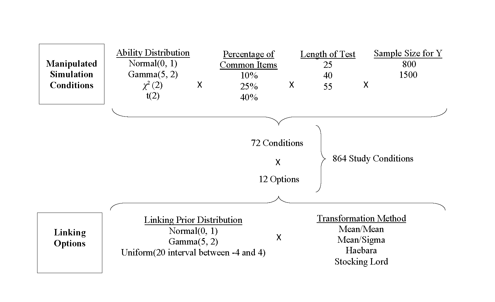
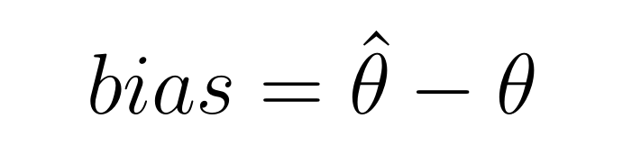
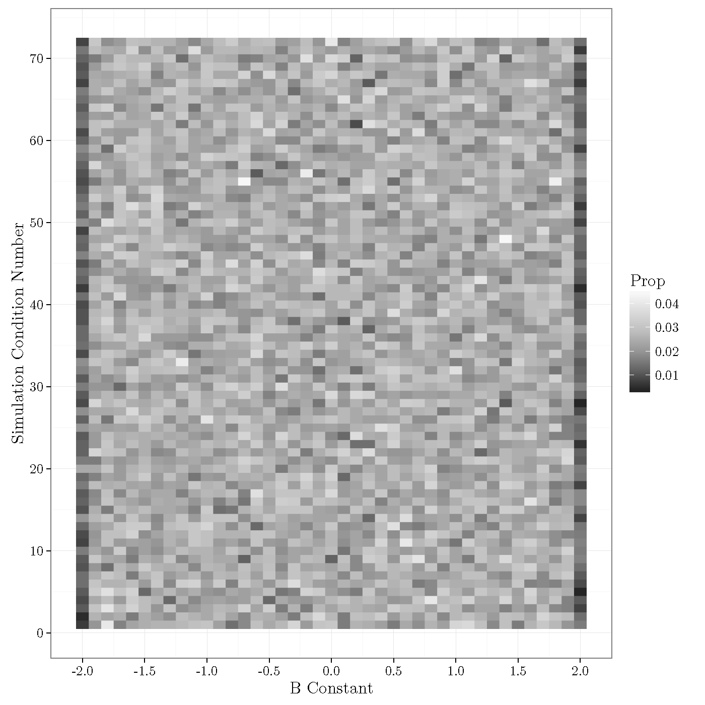
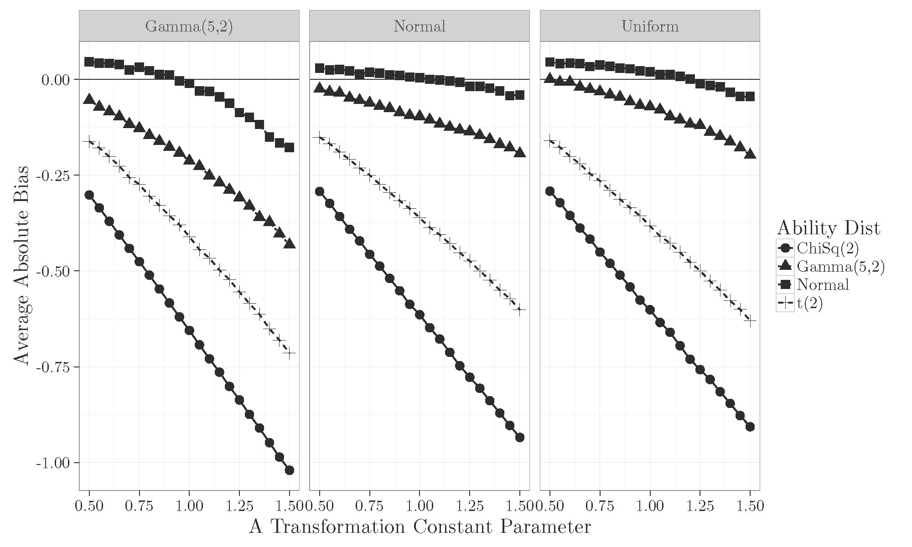
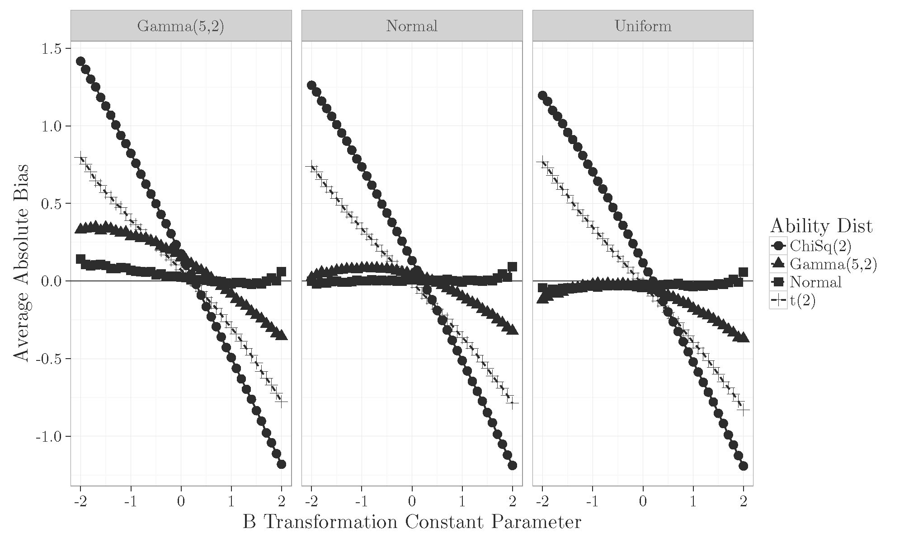

2016-04-08


Research Questions:



| Variable | Eta A | Eta B |
|---|---|---|
| Ability Dist | 0.699 | 0.013 |
| Prior Dist | 0.012 | 0.009 |
| A Pop | 0.149 | NA |
| B Pop | 0.012 | 0.522 |
| Ability Dist:Prior Dist | 0.004 | 0.003 |
| Ability Dist:A Pop | 0.045 | NA |
| Ability Dist:B Pop | 0.008 | 0.387 |
| Prior Dist:A Pop | 0.004 | 0.002 |
| Ability Dist:Prior Dist:B Pop | 0.002 | 0.002 |

